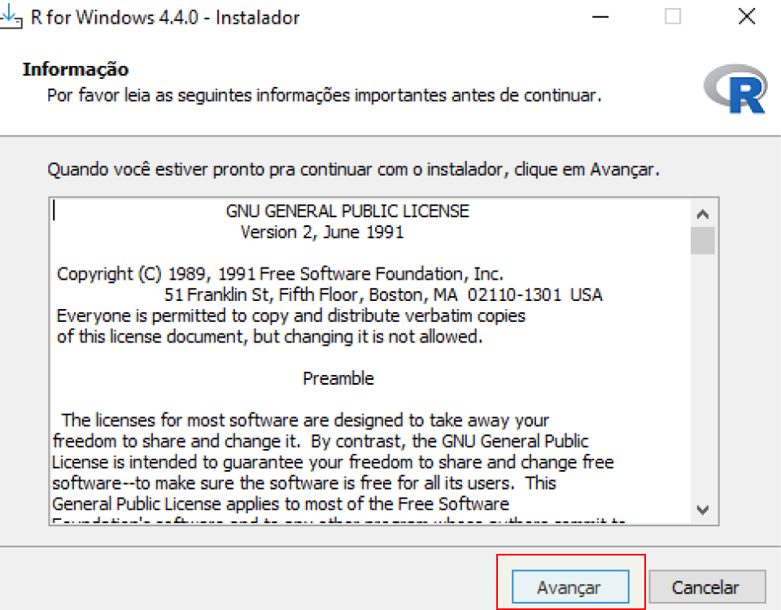
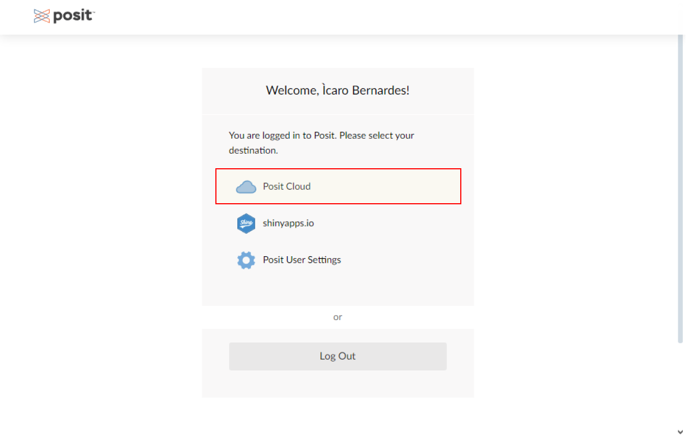

Dados para todos
Iniciando sua jornada no mundo da programação

Por que programar?
Automatizar processos e diminuir erros
- Unir várias planilhas em uma só
- Consertar o mesmo erro que sempre aparece em dados que você recebe
- Gerar vários relatórios com múltiplos campos padronizados
Automatizar processos e diminuir erros
- Identificar as coordenadas de vários endereços
- Coletar múltiplas notícias sobre um tema
- Listar todos os cursos ofertados por um portal
- Encontrar quais os termos mais frequentes das pergutas abertas de um formulário

O que é R?
É uma linguagem focada no uso de técnicas estatísticas e gráficas. A comunidade costuma criar ferramentas que dialogam com ferramentas externas como Excel ou ChatGPT.
Crise hídrica em Portugal
- Mapas de calor circulares para ilustrar efeitos sazonais
- Mapa cloropético das bacias por volume
Primeiro teste clínico controlado
- Estrutura de tabela
- Uso de ícones
Termos mais frequentes em sambas
- Pedidos automatizados para o Gemini (IA)
- Trabalho com dados textuais
BI’s
- ARGOS: Monitoramento da Segurança Pública
- Alvos prioritários: Informações sobre pessoas de interesse da Segurança Pública
BI’s
- Monitor ALEPE: Categorização e resumo das proposições realizadas na ALEPE
Relatórios automatizados
- Repasses municipais: Exibe dados de repasses armazenados numa planilha online
- Ficha municipal: Exibe dados dos municípios armazenados em planilha no Owncloud
- Custódia: Busca rápida por nomes no INFOPOL

Tarefas automatizadas
- Extrator de glosas: Estrutura dados de um .txt e preenche planilhas do Excel
Tarefas automatizadas
- Calculadora de acidentes terrestres: Compara nomes (preenchidos manualmente) nas bases SINATT e Glosas
- Identificação de egressos do sistema prisional: Compara nomes (preenchidos manualmente) nas bases de egressos e óbitos

Como usar o R?
RStudio
- Interface famosa que pode ser acessada via:
- Local: Download do R e RStudio
- Online: Acesso direto sem downloads (em inglês)
Usando RStudio no computador
- Baixar o R para Windows: Página do R
Usando RStudio no computador
- Instalar o R, sempre clicando em “Avançar”

Usando RStudio no computador
- Instalar o RStudio, sempre clicando em “Próximo”
Usando RStudio no computador
- Por fim, ao clicar no ícone do RStudio, vemos o ambiente de trabalho do R
Usando RStudio online
- Acessar o serviço Posit Cloud

Usando RStudio online
- Por padrão temos um “workspace”. É preciso criar um “RStudio Project” nele para poder produzir códigos
Usando RStudio online
- Por fim, vemos uma tela similar à da instalação local do RStudio
Google Colab
- Google Colab é uma alternativa ao RStudio online. Demanda apenas uma conta Google

Google Colab
- Por padrão o Colab usa Python. Podemos mudar essa configuração no menu Ambiente de execução e clicando na opção Alterar o tipo de ambiente de execução
Google Colab
- Na tela que se abre devemos clicar no menu Tipo de ambiente de execução e escolher R e salvar logo em seguida.
Google Colab
- Códigos em R agora podem ser usados nesse notebook!


Começando a aprender

Dicas importantes
Aprender juntos!
- Juntar-se com outras pessoas de variados níveis em programação para aprender e compartilhar conhecimento
- R Brasil - Programadores (Facebook): Link
- R Brasil (Telegram): Link
Usar interfaces
- Tem problemas com instalação? Use o Colab ou a Posit Cloud
- Alternativamente, há várias interfaces para uso no computador
Jamovi
- Interface similar a da Microsoft. Permite importar e manipular dados como em um planilha. Também faz análises estatísticas
BlueSky
- Interface mais avançada e extremamente versátil
Esquisse
- Interface para produzir gráficos arrastando variáveis nos eixos e elementos gráficos. Tem tradução para o português. Também exibe o código usado para criar o gráfico.

Cheat sheets
- São guias visuais de funcionamento do R. Explicam como funções e ferramentas funcionam: Link

Pequenos passos
- Entender a lógica por trás de algoritmos pode ser um bom passo antes de mergulhar numa linguagem: Curso em Vídeo
- As “condições ideiais” para aprender não costumam aparecer. A melhor coisa para o aprendizado é a prática constante
- Uma boa estratégia é integrar o R a tarefas de menor esforço e comprometimento

Criatividade pura
Jogos em R
https://sparktuga.shinyapps.io/ShinyDecisions/
https://gringer.shinyapps.io/poretris/
https://dreamrs.shinyapps.io/memory-hex/
https://rcharlie.shinyapps.io/sentify/
https://vivekkatial.shinyapps.io/uber_shiny/
https://github.com/koenderks/aRtsy
https://leonawicz.github.io/tabr/index.html